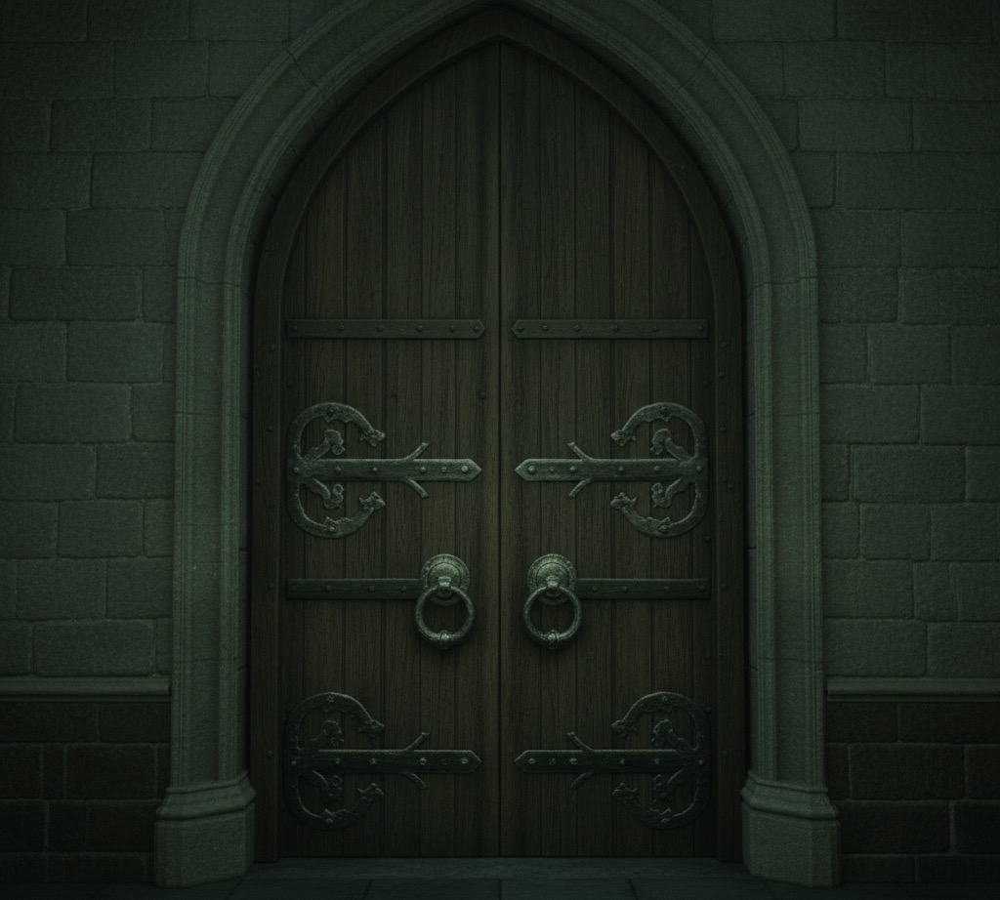

К шуму и звуку голосов
Дверь открывается. Катящаяся по залу тыква замирает, притворившись самой обычной тыквой. Но вы-то сразу узнаёте в этой тыкве виновницу бессонницы многих студентов! Она тоже вас замечает и срывается с места, запрыгивая на кресло напротив камина. Кажется, она надеялась притвориться подушкой, но вы её раскусили.
Поздравляем, вы нашли виновницу в Общем Зале на диване! Напишите в теме «Общий зал» рпг-пост, как вы шли по следам тыквы и нашли её. Ожидайте 2 этапа, чтобы узнать, какую тыкву вы нашли.
Дверь открывается. Вы оказываетесь в общем зале факультета Слизерин, но тыквы нигде не видно. Вы ступаете внутрь на одних носочках, стараясь двигаться бесшумно. Шорох! Бум! Тыква вдруг прыгнула прямо на вас. Вы теряете равновесие и падаете... Но удара не происходит. Тыква замерла и смотрит на вас.
Поздравляем, вы были атакованы тыквой в Общем Зале! Кто знает, может вы найдёте общий язык. Напишите в теме «Общий зал» рпг-пост, как вы шли по следам тыквы и нашли её. Ожидайте 2 этапа, чтобы узнать, какую тыкву вы нашли.